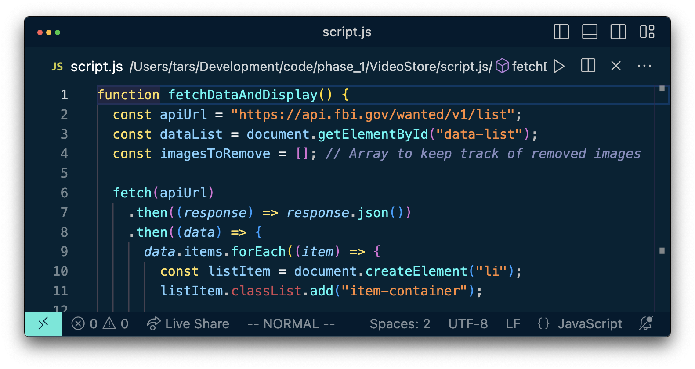
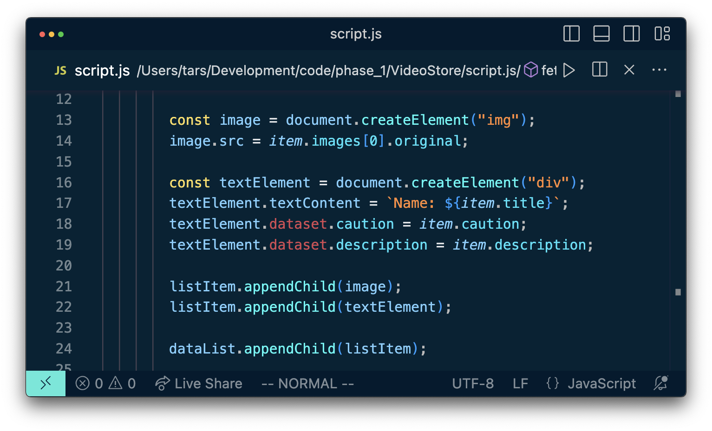
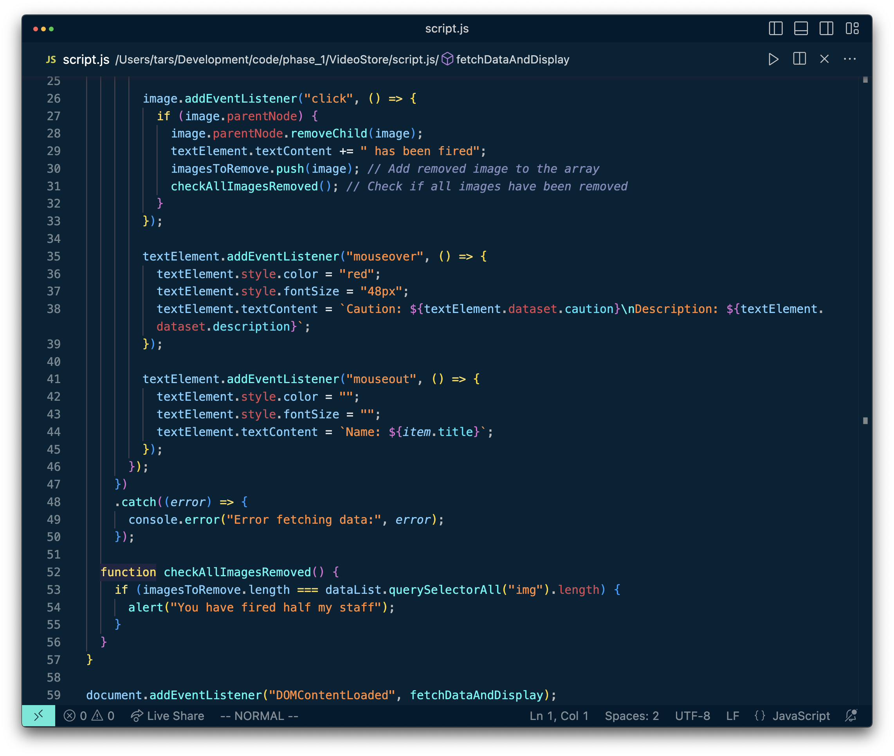

My Start
The fetchDataAndDisplay() function begins by defining the API endpoint, apiUrl, which points to the FBI's wanted list API. It then creates a reference to an HTML element with the ID "data-list" using document.getElementById() to later append the fetched data to it. Additionally, an empty array, imagesToRemove, is initialized to keep track of removed images.

Using Fetch API to Retrieve Data:
The fetch() method is utilized to send a GET request to the specified apiUrl. The response is initially transformed into JSON format using response.json(). The then() method processes the data once it is fetched successfully.

Dynamic List Creation:
Within the second then() block, the code iterates over each item in the fetched data using data.items.forEach(). For each item, it creates a list item (li) and assigns the class "item-container" to it. Furthermore, an image element (img) is created and set to display the first image of the wanted individual. The image source is obtained from the item.images[0].original property.
Displaying Additional Information:
A div element (div) is created to display additional information about the criminal, such as their name, caution message, and description. The "textContent" property is used to set the content of this div element accordingly.
Interaction and Event Listeners:
Event listeners are attached to both the image and text elements for interaction. When an image is clicked, it is removed from the list, and the corresponding text element is updated to indicate that the criminal has been "fired." The removed image is stored in the imagesToRemove array. Additionally, the function checkAllImagesRemoved() is called to determine if all images have been removed from the list.
Hover Effect:
Hover effects are implemented to enhance the user experience. When the user hovers over the text element, its color is changed to red, and the font size is increased. The text content is updated to display the caution and description data retrieved from the dataset. When the mouse moves out of the text element, its appearance is reset to display only the criminal's name.
Error Handling:
In the event of an error while fetching data from the API, the catch() block logs the error to the console.
Half Staff Alert:
The checkAllImagesRemoved() function is used to check if all images have been removed. If so, an alert is triggered, notifying the user that they have "fired half my staff."
